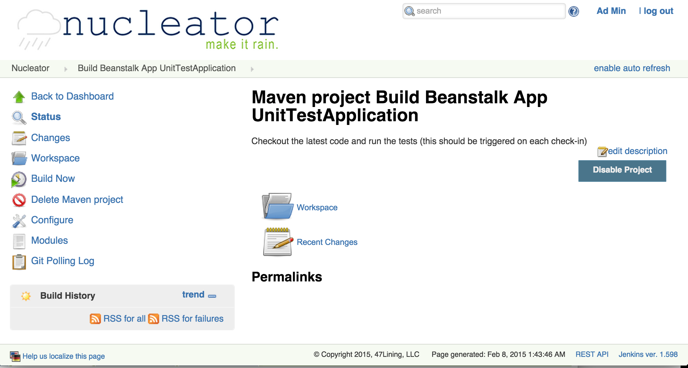
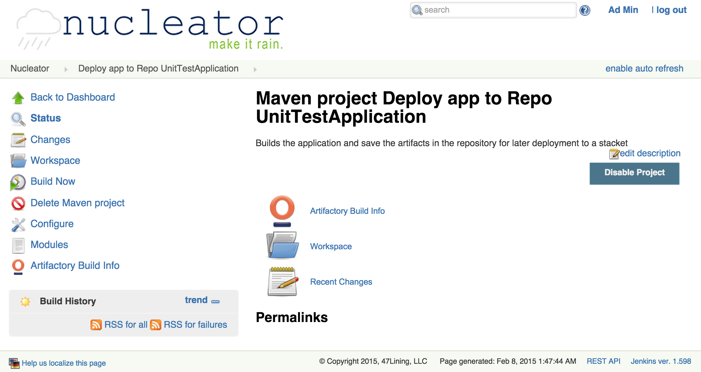
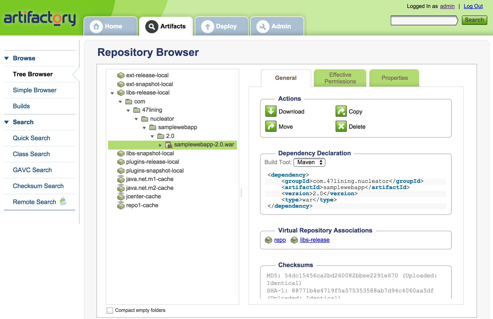
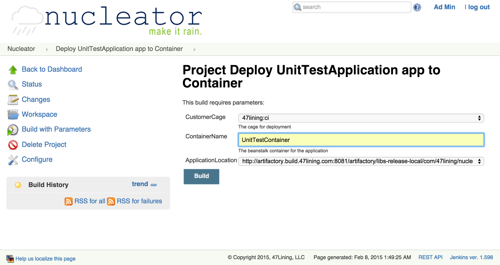
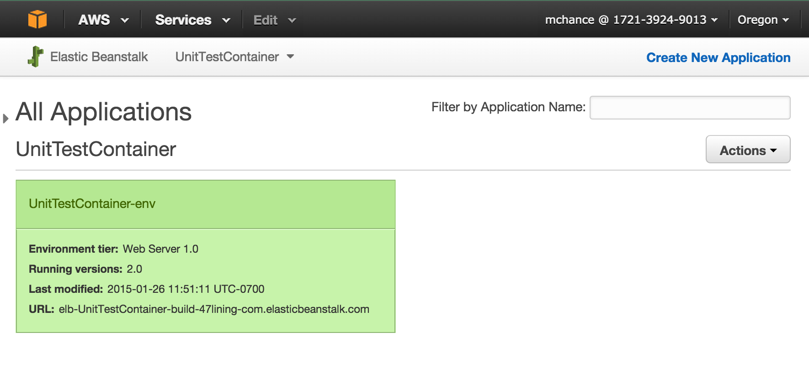
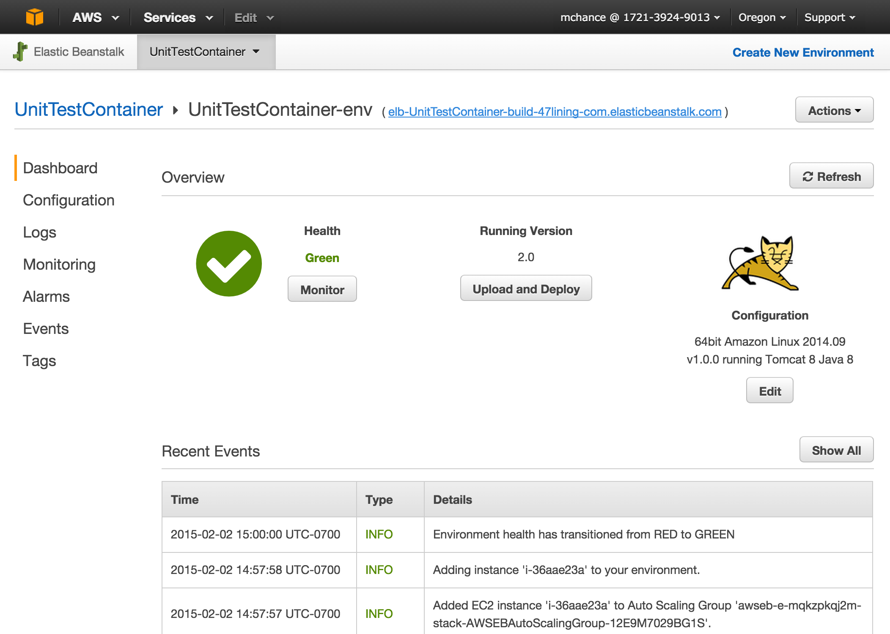
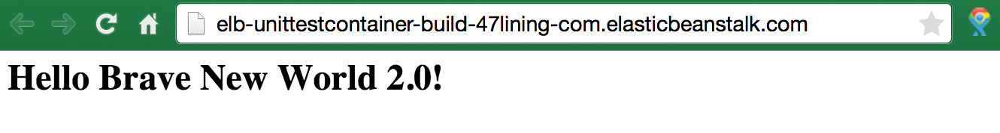

Application Build and Deployment Projects
There are these steps in the CI and Delivery process:
Build the application
For Java projects, the "Build Beanstalk App" will checkout the latest code and run the unit tests using Maven (a common tool used to organize Java projects and build, test and package them in a standard way). This could be setup to run on each check-in to the Git repository (Stash, Github, etc.).

Deploy Release to Repository
On request or periodically, build deployment artifacts and deploy them to the binary repository (Artifactory) with the NUI project "Deploy app to Repo"

You can validate that the application was built and deployed to the Artifactory repository:

Deploy Release to Container
When you are ready to deploy a release, run the "Deploy to Container" project for that application. You will select the cage, target environment and release version:

This will checkout the project definition from the SCM, determine the proper artifact from the Artifactory, and send it to the selected stackset/cage.
Verification on AWS Console
Once the application has been deployed, you can check the status in the AWS Console by checking on the Elastic Beanstalk instances:

By clicking on the environment name, you can see the deployment history for the environment and verify that in fact version 2.0 was deployed:

Viewing the Application
From the console, if you click on the application link (elb-UnitTestContainer-build-47lining-com.elasticbeanstalk.com in this case) or use the Nucleator-created URL unittestcontainer.build.47lining.com (application name, Cage name, customer domain), you can browse to the application itself
Next: Delete a Stackset